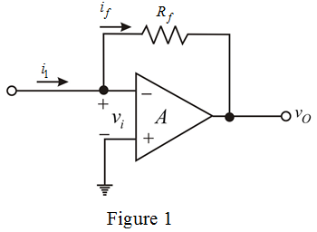

(a)
Consider the op-amp gain,  is infinite.
is infinite.
Write the voltage between the two input terminals of the op-amp.
Apply Kirchhoff’s voltage Law in the circuit.
Substitute 0 for  in the equation.
in the equation.
Refer to Figure P2.22 in the textbook.
Re-draw the circuit diagram.

(a)
Consider the op-amp gain, is infinite.
Write the voltage between the two input terminals of the op-amp.
Apply Kirchhoff’s voltage Law in the circuit.
Substitute 0 for in the equation.
Write the expression for trans-resistance, .
Substitute for in the equation.
Therefore, the expression for the trans-resistance is.
Determine the value of input resistance, .
Substitute 0 for  in the equation.
in the equation.
Therefore, the value of input resistance is.
(b)
Consider the op-amp gain,  is finite.
is finite.
Consider a certain input voltage exists at the input terminals.
Write the voltage between the two input terminals of the op-amp.

Substitute for  in the equation.
in the equation.
Substitute for in the equation.
Therefore, the expression for the trans-resistance is.
Determine the expression of input resistance,  .
.
Substitute for  in the equation.
in the equation.
Substitute  for in the equation.
for in the equation.
Therefore, the expression of input resistance is.